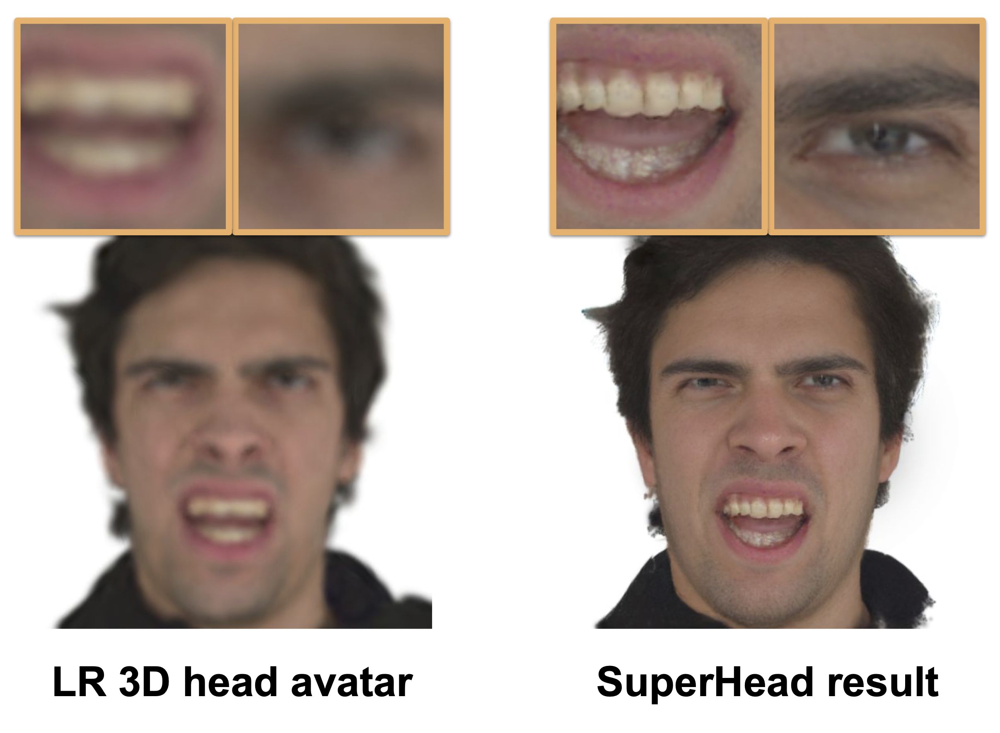
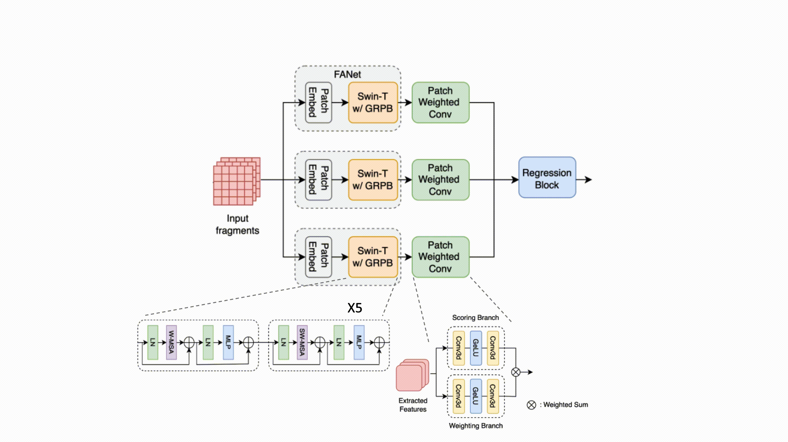
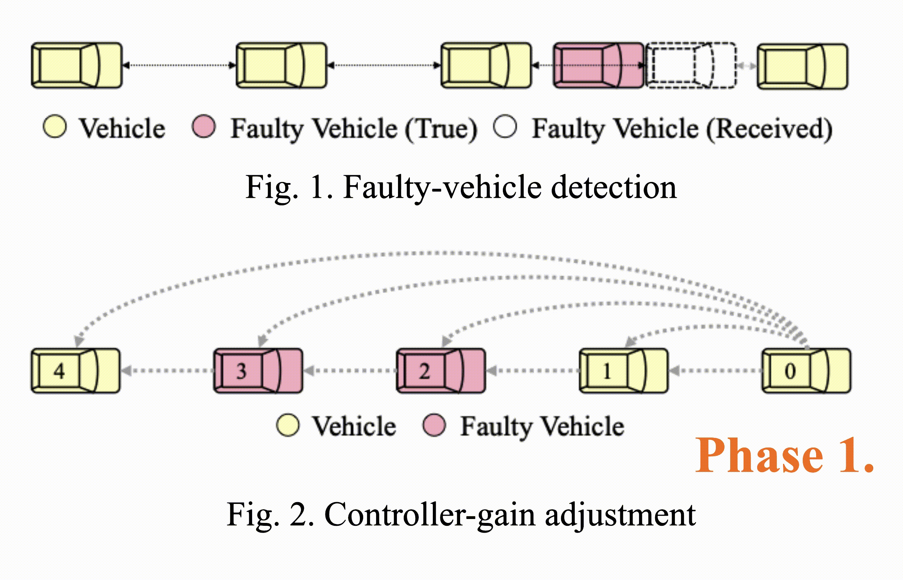

|
Ding-Jiun Huang
I'm Ding-Jiun Huang, a Master's student in Computer Vision (MSCV) at Carnegie Mellon University, advised by Prof. Fernando de la Torre.
My recent researches focus on digital human reconstruction, including 3D head avatar enhancement and
3D textured garment reconstruction. Prior to this, I had the previlege to be advised by Prof. Yu-Chiang Frank Wang
and Dr. Cheng Sun from NVIDIA Research. |
{kind=link}
|

|
From Blurry to Believable: Enhancing Low-quality Talking Heads with 3D Generative Priors
Ding-Jiun Huang, Yuanhao Wang, Shao-Ji Yuan, Albert Mosella-Montoro, Francisco Vicente Carrasco, Cheng Zhang, Fernando de la Torre 3DV, 2026 project page / paper Given a low-resolution 3D head avatar reconstructed from low-quality captures, SuperHead super-resolves high-fidelity geometry and detailed textures while ensuring multiview and temporal consistency under diverse facial expressions. |

|
Textured 3D Garments Generation from In-The-Wild Images
Ding-Jiun Huang, Yuanhao Wang, Cheng Zhang, Hugo Bertiche, Alexandru-Eugen Ichim, Thabo Beeler, Fernando De la Torre To be submitted to SIGGRAPH, 2026 paper Given a single in-the-wild image of a human apparel, our method creates the exact simulation-ready 3D textured garment through generating textures on predicted 2D sewing patterns. |
|
|
ASSR-NeRF: Arbitrary-Scale Super-Resolution on Voxel Grid for High-Quality Radiance Fields Reconstruction
Ding-Jiun Huang, Zi-Ting Chou, Yu-Chiang Frank Wang, Cheng Sun To be submitted to ECCV, 2026 project page / arXiv Given a neural radiance field optimized from low-quality capturings, our generalizable approach directly enhances the 3D representation, leading to high-quality renderings. |
|

|
SB-VQA: Stack-Based Video Quality Assessment Framework for Video Enhancement
Ding-Jiun Huang, Yu-Ting Kao, Tieh-Hung Chuang, Ya-Chun Tsai, Jing-Kai Lou, Shuen-Huei Guan IEEE/CVF CVPR NTIRE, 2023 arXiv Proposing a stack-based framework for video quality assessment (VQA) of videos enhanced by deep-learning-based methods. |
|

|
Consensus-Based Fault-Tolerant Platooning for Connected and Autonomous Vehicles
Tzu-Yen Tseng, Ding-Jiun Huang, Jia-You Lin, Po-Jui Chang, Chung-Wei Lin, Changliu Liu IEEE Intelligent Vehicles Symposium, 2023 IEEE Xplore Developing a motion planning algorithm for autonomous vehicles to handle malicious attack and communication faults in a platooning system. |
|
This personal page template was borrowed from source code. |